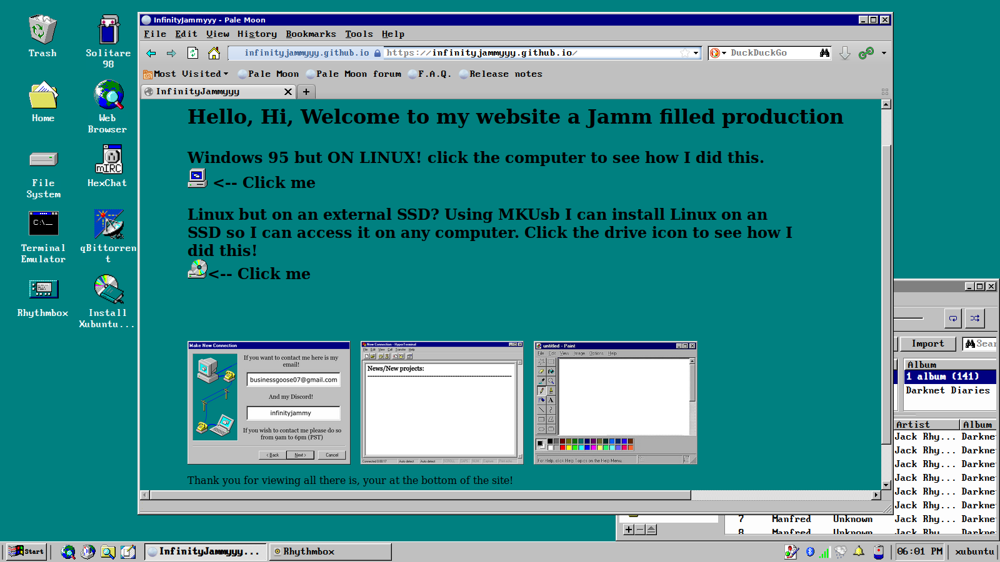
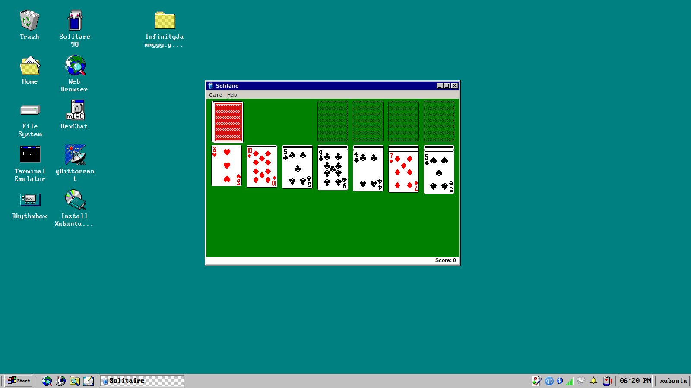
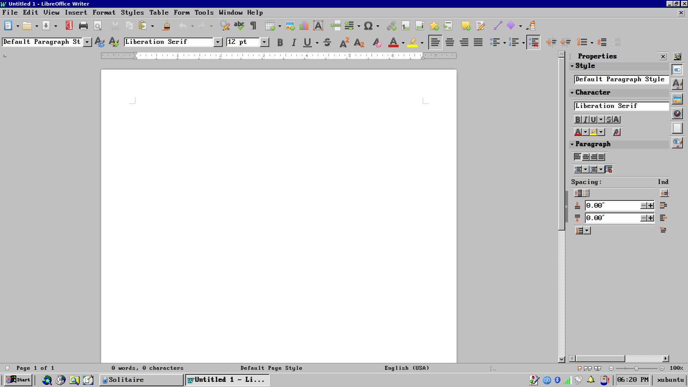

With Chicago95 you can install a windows95 like theme on XUbuntu this does work with other Distros but I have found that XUbuntu coming pre-packaged with the XFCE desktop environment is the works the best.
To install the theme you need the Chicago95 GitHub cloned to your system and you need python to make it so that windows 95/98 applications can be installed on your system you need Wine32 and Solitaire 98 can simply be found on the Internet Archive now that we have the prerequisites out of the way lets get into installing the system and configuring the desktop.
This is what the desktop looks like with Chicago95.
--------------------------------------------------------------------------------------------------------------------------
----------------------------------------------------------------------------------------------------------------------------------------------------------------------------------------------------------------------------------------------------
--------------------------------------------------------------------------------------------------------------------------
Now lets begin the installation process for installing this nice theme.
ps tldr if you know how to install xubuntu skip to step 6
1.) Head down to xubuntu.org head to downloads and click 64-bit systems this will give you a torrent file for xubuntu in the x86-64 architecture (you are most likely architecture you are using on your laptop/pc unless you use macbooks)
2.) Install qbittorrent on your device and launch the application in the top left corner you will see files click it and select add torrent file then it should bring up your file explorer head to your downloads and you should see your torrent file click it it will take you to a screen were you can configure were it is downloaded and other stuff however by default it will install to your downloads directory so you can just hit Ok which is in the bottom right corner
3.) Once it finishes downloading (you should get a notification) flash it to your USB stick using balcena etcher or gnome disks or any of your favorite flashing software
4.) First you need to go into your BIOS by either pressing f2 or f12 at boot (mine is f2) (if you open the menu to boot from external media you can just shutdown your computer and press the other button) and disable secure boot and enable legacy booting as well as enabling booting from USB then save and exit next boot from your USB stick on your computer usually to do this you need to spam f2 or f12 it depends from computer to computer (mine is f12) you should see your USB BOOT or something similar click that remember do not click the UEFI option to boot as that will break things
5.) Go through the normal install process and install xubuntu
6.) Hi if you skipped! Welcome to your new desktop now run:
yes | sudo apt update && yes | sudo apt upgrade
this will fully update and upgrade your system without any user interaction!
lets install the dependencies needed for our theme install python, git, and for compatibility with windows 95 applications install wine and wine32 for the browser you can use palemoon. To install the packages listed above simply run:
sudo apt install <Package goes here>
7.) Configure the wine compatibility layer if you did not install wine skip to step 8 anyway open a terminal and run
sudo dpkg --add-architecture i386
this enables the 32 bit architecture required for running Windows 95/98 applications now run winecfg once it is finished simply hit Ok no additional configuration is required
8.) Open the terminal and type:
git clone https://github.com/grassmunk/Chicago95
make sure to go to that GitHub repository to check it you should not git clone anything without checking it first as people like me could clone malware onto your system just as a warning anyway open up the folder that it installed onto your system then right click and hit open terminal here next run:
python3 installer.py
this will open up the installer just install what you want using the check boxes (I recommend installing them all)
9.) Enjoy Chicago95 and if you want to install solitaire 98 you can find it here:
https://archive.org/details/solitaire_202102
simply double click the EXE file
Thank you for reading this entire thing!